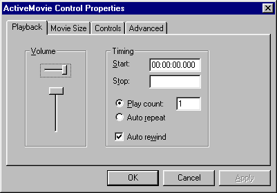

ActiveX Control Editors
Related Topics
ActiveX tutorialActiveX control item
OLE Programmer's Guide chapter
Use the ActiveX Control Editors to specify the type of an ActiveX control and its appearance and behavior in a Galaxy dialog.
ActiveX Control Editors are only available on Windows95 and NT platforms. They are disabled on all other platforms.
This documentation assumes you already have installed some ActiveX controls on your system and are familiar with them.
Use the ActiveX Control Editors to:
Opening ActiveX Control Editors
The ActiveX Control Editors are available from the Properties page for an ActiveX control item.To open an ActiveX Control Editor:
- Open the OLE Palette.
The palette shows all ActiveX controls available on your system.Note that if your platform is not capable of using OLE, the OLE palette is not visible.
- Drag an ActiveX control from the palette to your dialog.
Galaxy automatically generates a subclass of OLEControlSiteItem, named after the ActiveX control, which contains methods and variables specific to the ActiveX control.
ActiveX Control Editors: Image Map
Enabling ActiveX Events
You can have your Galaxy application interact with an ActiveX control by interacting with that control's ActiveX events. Refer to the ActiveX control's documentation for more information on what ActiveX events are available for that specific control.You need to specify what ActiveX events you want to examine for the control:
- Locate the Event Types property in the Properties List for the
ActiveX control item.
- Click on the Set Event button.
This lists all event types available for this specific ActiveX control.
- Select the desired events by clicking on the appropriate check boxes.
- Edit or subclass the ActiveX control. Each event you selected in the ActiveX Event dialog has a corresponding method. For example, the "Click" event has a method usually name "OnClick." Modify the corresponding method according to your application's needs.
Setting Properties for an ActiveX Control
An ActiveX control might have Properties specific to it that can be modified through the Visual Resource Builder.
- Locate the Properties property in the Properties List for the
ActiveX control item.
- Click on the Properties button.
 - Specify the desired properties for this ActiveX control.
Table of Contents
Switch to Another Document
Need help? Contact Visix.